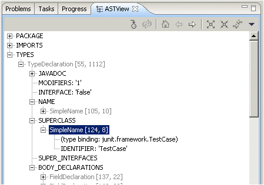

A view to visualize the AST (abstract syntax tree) of a Java
file open in the editor. Navigate from text selection to AST nodes and
from nodes to selections.
for Eclipse 3.1 or greater:
for Eclipse 3.0.x:
or use the update site
http://dev.eclipse.org/viewcvs/index.cgi/%7Echeckout%7E/jdt-ui-home/plugins/org.eclipse.jdt.astview/AST-View-Site
- Open the AST view from the view menu: Window > Show View > Other... Java > AST View
- Open a Java file in the editor
- Click on 'Show AST of active editor' (
 ) to
populate the view: The view shows the AST of the file opened in the
editor and will also reveal the element corresponding to the current
text selection
) to
populate the view: The view shows the AST of the file opened in the
editor and will also reveal the element corresponding to the current
text selection
- Enable 'Link with editor' (
 ) to
automatically track the active editor and the selection in the active
editor.
) to
automatically track the active editor and the selection in the active
editor.
- Double click on AST nodes to get the corresponding element revealed in the editor.
- Double click again to see the 'extended range' of a node, that means the range including all comments associated with it (comment mapper heuristic).
- When the AST's underlying document has been changed use
'Refresh' (
 ) to update the AST.
) to update the AST.
The AST view shows the following nodes

- AST nodes are shown in gray color and with source range
information. Children of AST nodes are the node properties.
- node properties have names that are all all capitalized.
Node properties represent lists of child nodes, a child node or a
primitive node attribute (String, int or boolean)
- bindings are shown in blue. Only selected bindings are shown
shows all binding properties,
comment nodes
attached to the root compilation unit and compiler problems detected in
the AST.
Version 1.0.2 (requires Eclipse 3.1 or higher)
(requires Eclipse 3.1 or higher)update to latest 5.0 AST API's
comparison tray to test binding API with arguments
test ASTs created by 'reconcile'
comparison tray to test binding API with arguments
test ASTs created by 'reconcile'
Advanced Features
- You can toggle between the AST Level 2 and AST level 3 in
the view menu (triangle). AST level 3 is the extended and modified AST
that includes the new 1.5 language constructs. Note that the AST level
3 is only available in 3.1 builds
- Source is included in the plugin archive and
- Comments to Martin_Aeschlimann[at]ch.ibm.com
Thanks and credits go to Christian Hauser: The current AST view plugin is based his AST view implementation from the Zuerich Code Camp. Thanks a lot!
Version 1.0.2 credits go to Markus Keller!